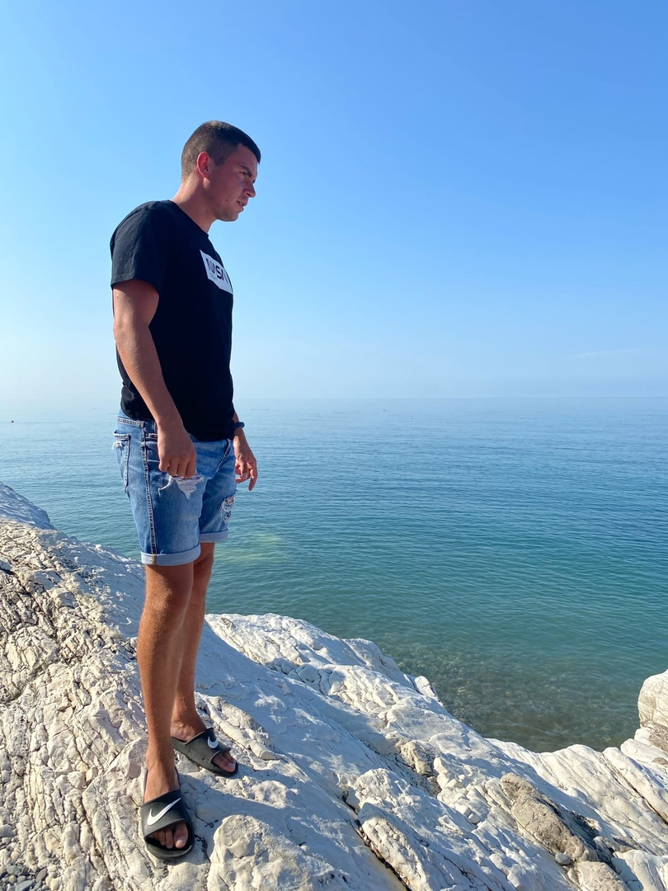

Биография
Меня зовут Ерохин Егор Игоревич. Учился в МОУ СОШ №3 г. Ростова Великого, окончил ее в 2013 году. Сразу после школы поступил в ЯГПУ им. К.Д. Ушинского на факультет физической культуры и спорта, в 2019 году прошел курсы повышения квалификации.
В 2019 году устроился на работу в МОУ Белогостицкую СОШ учителем физисеской культуры и по совместительству в бассейне АкваНеро инструктором по плаванию.
